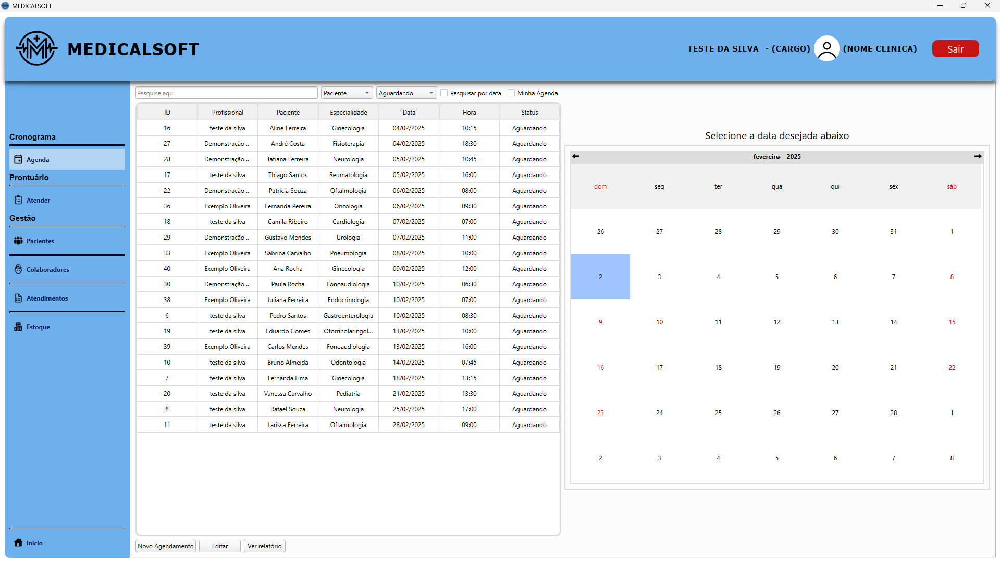
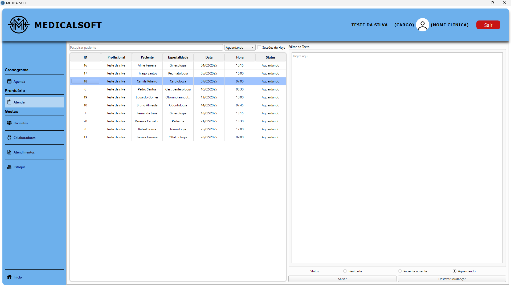
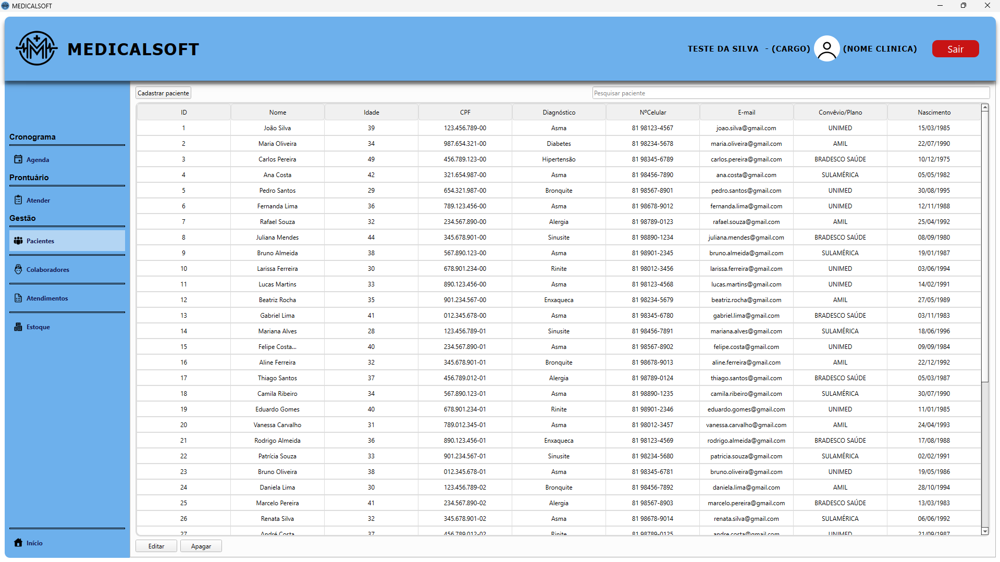
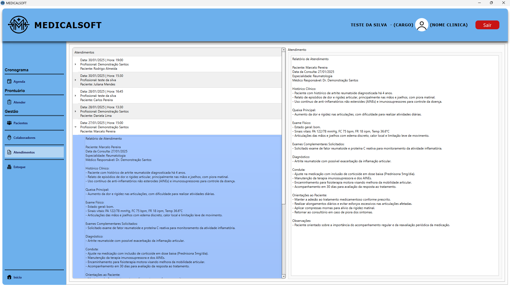

O MEDICALSOFT é um sistema de gestão clínica desenvolvido para otimizar a organização e administração de clínicas e consultórios multiprofissionais. Projetado com uma arquitetura robusta utilizando Qt Creator, C++ e integração com o banco de dados SQLite, o software oferece uma interface intuitiva e funcionalidades completas para o gerenciamento de agendamentos, registros de atendimentos, relatórios detalhados e organização de dados clínicos.
Com foco em usabilidade e automação de processos, o MEDICALSOFT permite aos profissionais de saúde otimizar seu fluxo de trabalho ao facilitar desde o agendamento de sessões até a geração de relatórios personalizados. O sistema suporta a filtragem inteligente de dados com base em critérios como profissional, paciente, serviço e datas selecionadas, permitindo consultas rápidas e precisas.
Além disso, o sistema integra funcionalidades de edição de sessões e visualização de relatórios, possibilitando que os dados já registrados no banco sejam carregados automaticamente em formulários para atualizações eficientes. A centralização das informações clínicas oferece segurança, confiabilidade e suporte ao registro histórico de atendimentos, mantendo padrões de qualidade e organização.
Voltado para clínicas que buscam uma solução integrada, o MEDICALSOFT se diferencia por oferecer uma abordagem personalizada e flexível, mantendo foco na melhoria do atendimento ao paciente e na eficiência dos processos internos.
O sistema permite o cadastro, a visualização e a edição de sessões clínicas, abrangendo campos como data, horário, profissional, paciente e serviço. Ideal para otimizar a organização da agenda da clínica.
Facilita a realização de atendimentos com registros detalhados para cada sessão, mantendo um histórico organizado e acessível para profissionais de saúde.
Permite o registro completo de informações sobre pacientes, incluindo dados pessoais e histórico clínico, com uma interface intuitiva para buscas e atualizações.
Oferece uma visualização hierárquica dos atendimentos realizados, com textos de relatórios vinculados às sessões, garantindo uma análise clara e detalhada das atividades.
